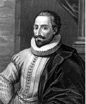

Miguel de Cervantes tarafından yazılan Don Kişot (I. Bölüm, 1605; II. Bölüm, 1615) İspanyolca konuşulan ülkelerin tartışmasız en önemli kültürel mihenk taşıdır. İspanyol edebiyatının en başta gelen eserlerinden biri olarak göklere çıkarılır ve genellikle ilk modern roman olarak kabul edilir.

Baş karakteri, Orta İspanya’nın La Mancha bölgesinden gelen elli yaşında bir adamdır. Şövalyelikle ilgili kitaplardan etkilenen bu adam bir gün ailesini şaşkına çevirerek, adını Don Kişot olarak değiştirdiğini ve asil atının –gerçekte bir deri bir kemik kalmış ahır atı, Rosinante– üzerinde, tüm yanlışları düzeltmek ve büyük eylemler yapmak üzere dünya seyahatine çıkacağını bildirir. Kendisine Sancho Panza adında cahil bir köylü olan, Don Kişot’un delinin biri olduğunu düşünen ama yeni efendisinin ona yönetmesi için bir ada vereceği vaadine de yarım gönülle inanarak oyunu oynamaya çalışan bir “seyis” edinir.
İkili, talihsizliklerle dolu uzun bir yolculuğa çıkar. Don Kişot, çevresini sürekli yanlış yorumlar: Hancıları şövalye, fahişeleri hizmetçi, rahipleri büyücü ve rüzgar değirmenlerini dev zanneder. Yiğitliği çoğu zaman, iyilikleri için çalıştıkları kişilere faydadan çok zarar verir. Tüm eylemlerini Lady Dulcinea del Toboso isimli bir “prenses”e –gerçekte kendisine ithaf edilen jestlerin farkında bile olmayan bir köylü kıza– adar.
Don Kişot, şövalye romantizmiyle –Ortaçağ boyunca seküler edebiyatın ürünü olan bir tür–hem dalga geçer hem de ona olan bağlılığını gösterir. Genel hatlarıyla anlatılan bu epik şiirler, kahraman şövalye hikâyeleri ile tipik şekilde öne çıkan saray aşkı temasını birbirine bağladı. Bazıları gerçek olaylara dayanıyordu, ama diğerleri sadece efsaneydi. Don Kişot’ta Cervantes aynı malzeme ile uğraştı ama daha uyumlu bir öykülemeyle, eşi görülmemiş psikolojik derinlikle ve ironik farkındalıkla sorunların üstesinden geldi. Aynı zamanda romanına şaşırtıcı postmodern açılımlar da ekledi: Başka bir yazarın 1614’te Don Kişot’un ilk bölümüne sahte bir devam yazmasından sonra, Cervantes bu sahte devamı romanın gerçek ikinci kısmına eklemeye karar verdi. Don Kişot ve Sancho’nun bu yanlış senaryonun farkında olmalarını, onlara bu kısmın üzerinde alayla yorum yaptırarak sağladı.
Günümüz edebiyatında bu tip özellikleri baştan kabul etmemize rağmen –ve aslında roman formunun kendisini baştan kabul ederiz– o zamanlar bunlar müthiş yeniliklerdi. Don Kişot karakteri, farklı çağlar ve gruplarca bir soytarı, trajik bir kahraman ve uzlaşmayı reddeden cesur bir şahsiyet olarak çeşitli şekillerde yorumlanan bir figürdür ve zamanı için büyük bir başarıdır. Pek çok özelliğin onda cisimleşmesi, Cervantes’in başkahramanını kurgu alanında en ölümsüz karakterlerden biri yapar.
EK BİLGİ:
1. Don Kişot, tarih boyunca basılan tüm kitaplar arasında toplam baskı sayısı açısından İncil’den sonra ikinci sırada gelir.